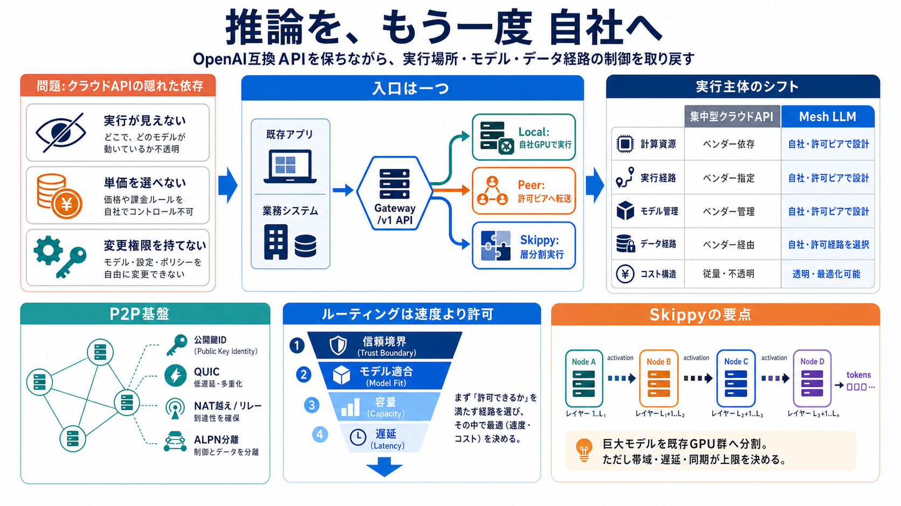

Visibility
実行が見えない
どの設備・地域・モデル版で処理されたかを、利用企業が直接確認できる範囲は限られます。

Distributed inference
Mesh LLM 1.0は、既存GPUとピアを束ね、LLM推論を中央クラウドの外で実行する分散基盤です。OpenAI互換APIを維持しながら、実行場所・モデル・データ経路の制御を利用者側へ戻します。
Hidden dependency
クラウドAPIは導入を簡単にした一方、推論の実体を利用者から遠ざけました。処理場所、モデル変更、データ保持、料金条件の多くはベンダー側で決まります。
Visibility
どの設備・地域・モデル版で処理されたかを、利用企業が直接確認できる範囲は限られます。
Economics
利用量とAPI単価が支出を決め、既設GPUを保有していても推論資産として再利用できません。
Governance
モデル更新、提供終了、レート制限、保持方針などの重要条件を外部ロードマップに委ねます。
Control shift
利用コードから見れば、どちらもOpenAI互換のリクエストです。差は、推論資源を誰が所有し、経路・更新・費用を誰が決めるかにあります。
One front door
クライアントは単一のOpenAI互換ゲートウェイへ接続します。メッシュ内部は、要求モデルと資源状況に応じてローカル、ピア、Skippyへ振り分けます。
クライアントへ返る応答形式は共通。複雑さはゲートウェイとメッシュ内部へ閉じ込められます。
Peer foundation
Mesh LLMの中核はP2P基盤irohです。公開鍵でノードを識別し、QUIC接続、NAT越え、リレー、通信種別の分離を一つの基盤で扱います。
Identity
固定IPや中央アカウントではなく、暗号学的なノードIDを接続の基点にします。
Transport
暗号化された多重ストリームで、制御情報と推論データを効率よく運びます。
Reachability
直接接続できる経路を探し、難しい場合はリレーを介して到達性を確保します。
Protocol
メインメッシュ、制御、分割実行を論理的に分け、通信目的を識別します。
Policy before speed
分散推論のルーティングは単なる負荷分散ではありません。信頼境界を満たす候補だけを残し、その中からモデル適合性、容量、遅延で選ぶ必要があります。
そのノードへ入力、活性化、モデル資産を渡してよいか。
要求されたモデル、量子化方式、版、コンテキスト条件に一致するか。
GPUメモリ、同時実行数、キュー長が要求を受け入れられるか。
ネットワーク遅延と推論速度が用途のSLOを満たすか。
Two distributions
ピアルーティングとSkippyは、同じ「分散」でも問題設定が異なります。前者は要求単位、後者は一回の推論計算そのものを複数ノードへ分割します。
完全なモデルを持つノードへ、リクエスト全体を転送します。各推論は原則として一つのノード内で完結します。
モデル層を複数ノードへ配置し、中間活性化を順番に渡します。一台に収まらないモデルも対象にできます。
ローカル実行は両者の基準線です。最も単純で低遅延ですが、単一ノードのGPUメモリと処理能力に制約されます。
Pipeline inference
Skippyはモデルを層単位で複数ステージへ配置します。入力は各ノードを順に通り、活性化と呼ばれる中間データが次のステージへ送られます。
トークン化された入力を受け、前半の表現を生成。
受信した活性化へ割り当て層の計算を適用。
計算状態を引き継ぎ、後段へ逐次転送。
最終確率を計算し、生成トークンを返却。
一台のVRAMに収まらない235B級モデルを、既存GPU群へ分割配置できる可能性を開きます。
GPU購入問題を、層配置・ネットワーク・同期・障害回復を含む分散システム問題へ変えます。
Network becomes compute
層分割では、各トークン生成の途中にネットワーク転送が入ります。最も遅いステージと最も不安定なリンクが、パイプライン全体の品質を支配します。
Bandwidth
活性化サイズに対して回線が細いと、GPUは転送待ちになり利用率が落ちます。
Latency
トークンごとの逐次性により、小さな遅延でも生成全体へ累積します。
Balance
一つのステージだけが重いと、後続ノードが待機しスループットが頭打ちになります。
Failure
ノード離脱時に、どこから再試行するかが応答時間と計算浪費を左右します。
Compatibility layer
Mesh LLMは標準的なOpenAI互換エンドポイントをlocalhost:9337/v1で公開します。既存クライアントは接続先を変え、分散実行の複雑さを意識せず利用できます。
クライアントライブラリ、主要なリクエスト形式、業務アプリから見たAPI境界。
ストリーミング、エラー表現、モデル名、ツール呼び出しなどの互換範囲と版追随。
Beyond serving
40以上のモデルとプラグインmanifestは、能力を交換可能な部品として扱う設計を示します。MCP、HTTP、イベント経路を持ち、将来のエージェントやモバイル連携へ広げられます。
Catalog
モデルごとの実行能力をカタログ化し、要求名と利用可能なノード資源を対応づけます。
Manifest
プラグインが提供する機能、接続方式、必要条件を宣言し、追加機能を疎結合にします。
Interfaces
同期APIだけでなく、ツール連携やイベント駆動処理を同じ基盤へ接続できます。
Identity is not policy
公開鍵識別とQUICは安全な接続の土台です。しかし企業利用では、誰がどのモデルとデータへ触れられるかを別途定義し、検証可能にする必要があります。
Governed data flow
中央クラウドを介さない構成は、データの行き先を直接制御しやすくします。ただし、参加ピアの信頼性と監査ポリシーが弱ければ、リスクは分散したまま残ります。
Data locality
機密度や地域規制に応じ、ローカル限定、特定拠点限定、許可ピア利用を分けます。
Activation flow
Skippyでは元の文章だけでなく、層間を流れる活性化もデータ分類と保護の対象です。
Accountability
障害、漏えい、不正ノード、モデル誤配布が起きた際の責任分界を事前に定義します。
Total cost view
既存GPUの有効活用は強い経済合理性を持ちますが、クラウド課金の削減額だけでは判断できません。設備、電力、回線、監視、障害対応を含む総保有コストで比較します。
既設GPUの余力があり、需要が安定し、データ主権やコスト予測可能性に高い価値がある。
需要が突発的で、専任運用者がなく、低遅延ネットワークや高可用性の構築費が大きい。
Lifecycle discipline
接続できることは運用開始にすぎません。エンタープライズ利用では、モデル版、資源配分、監視、フェイルオーバーを継続的にそろえる仕組みが必要です。
ノードIDを登録し、GPU能力、ネットワーク、信頼区分をカタログへ反映。
Gate：未管理ノードを拒否版、量子化、分割位置、manifestを検証し、段階的に更新。
Gate：署名と互換性を確認キュー、VRAM、温度、帯域、トークン速度、経路遅延を観測。
Gate：SLO逸脱を自動検知ピア離脱、回線断、途中失敗時の再配置と再試行範囲を制御。
Gate：責任者と復旧手順を固定「ノードを増やせば強くなる」のは、自動配備・監視・障害検知・版管理が先に整っている場合に限られます。
Proof still needed
提示されたアーキテクチャは実務的ですが、本番採用を決める公開データは不足しています。性能、障害耐性、監査可能性、サービス水準を実環境で検証する必要があります。
Benchmark
モデル別のTTFT、tokens/s、同時実行数、ローカル・ピア・Skippy間の差。
Chaos test
ノード離脱、回線劣化、リレー切替、ステージ途中障害での復旧挙動。
Auditability
実行ノード、モデル版、経路、操作者を後から一貫して追跡できるか。
SLA / SLO
可用性、遅延、更新頻度、脆弱性対応、互換性維持の責任と目標値。
Expand by evidence
最初から全面置換する必要はありません。低リスク用途で互換性と運用性を確認し、証拠がそろうたびにモデル、ノード、データ機密度を広げます。
単一拠点・非機密データで、OpenAI互換性とローカル性能を確認。
合格：主要クライアントが無改修で動作自社管理ノードだけを接続し、ルーティング、監視、版管理を検証。
合格：経路と責任主体を追跡可能大規模モデルを限定用途で分割し、帯域、遅延、障害回復を測定。
合格：用途別SLOとTCOを満たす許可ピア、対象部署、機密度を段階的に拡張し、本番運用へ移行。
合格：監査・法務・運用承認を取得各段階でクラウドAPIをフォールバックとして残せば、可逆性を保ちながら実行主体を移せます。
Measured conviction
Mesh LLMは、OpenAI互換性を壊さずに推論資源とデータ経路の主導権を取り戻す、意味のある設計的反論です。採用判断は思想への共感ではなく、実測性能、監査性、障害回復、TCOで行うべきです。
クラウド依存を減らし、既存GPU、地域規制、データ主権を一つの実行基盤へ統合。
ネットワーク遅延、分散障害、モデル整合、監査、運用責任が新しいボトルネック。
PoCから開始し、限定利用を経て、測定可能なゲートを通過した範囲だけ本番化。
# Mesh LLM Launches on iroh for Distributed AI Computing. Mesh LLM is now live on iroh, bringing distributed AI computin…
Mesh LLM 1.0 — Distributed Inference on iroh | explainx.ai Blog | explainx.ai. # Mesh LLM v1.0: Split 235B Models Across…
# Mesh LLM: distributed AI computing on iroh. Distributed Model Inference: a mesh of laptop, GPU rig, mini PC, server, w…
# Mesh LLM: Run 235B Models Across Your Home Lab with iroh. A new distributed inference system pools GPU resources acros…
Mesh LLM कई मशीनों के GPU और मेमोरी को एक OpenAI-compatible API के पीछे जोड़कर बड़े मॉडलों के लिए वितरित AI execution सक…